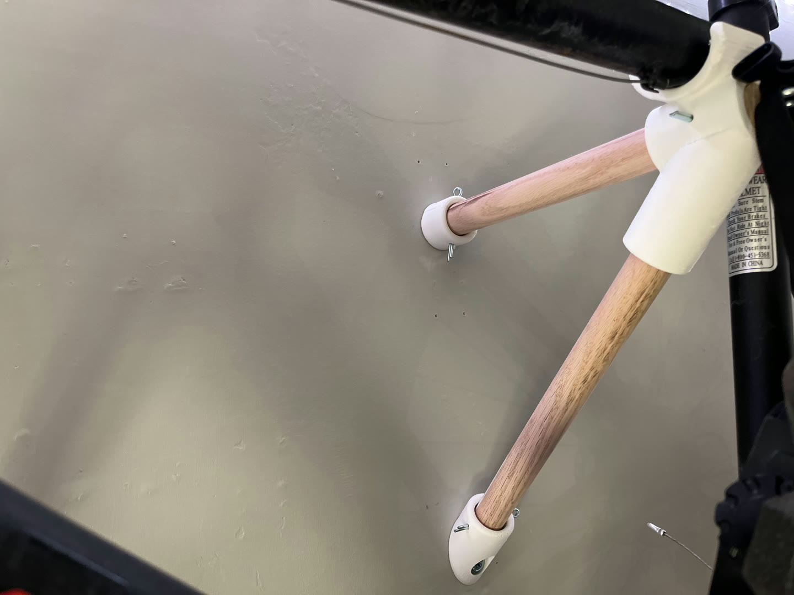
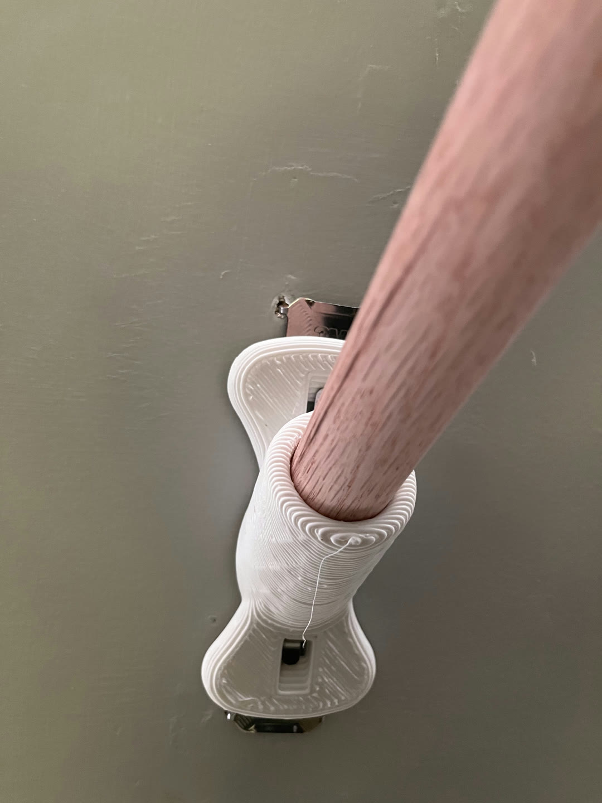
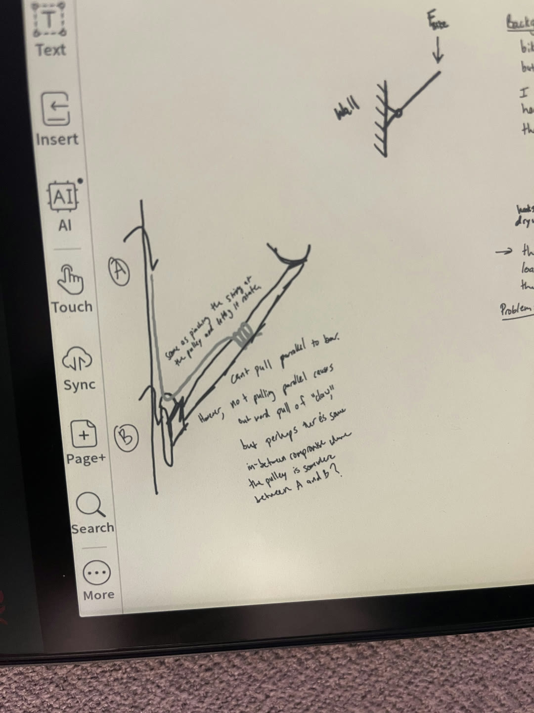
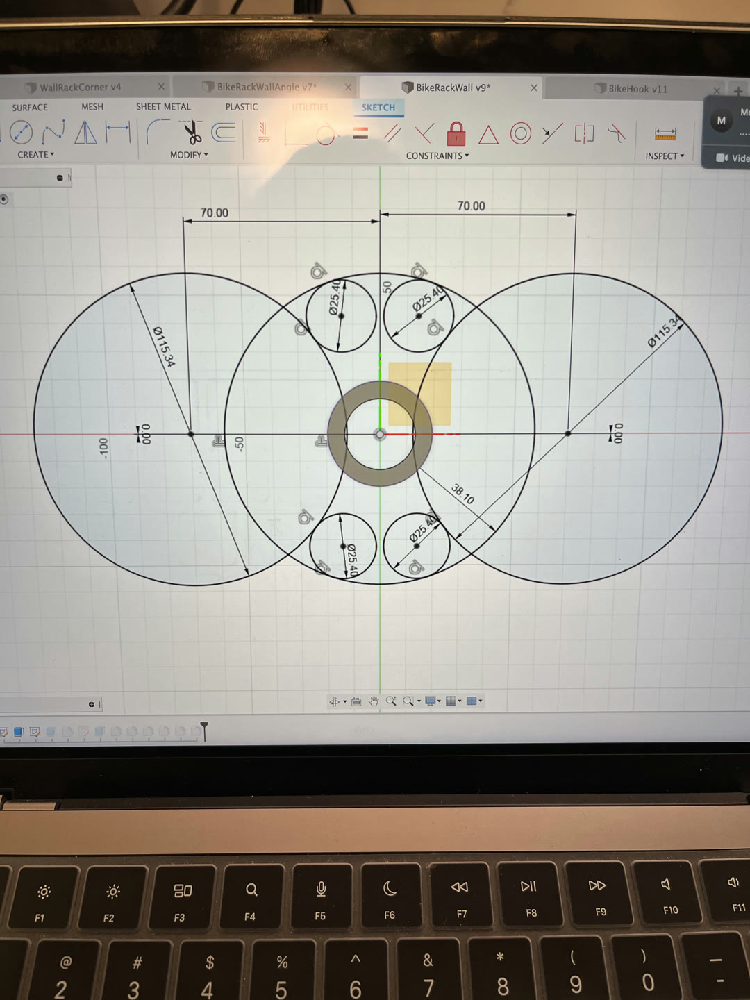

Bike Rack
A wall-mounted bike rack designed to go up with no tools: 3D-printed mounts hung on 3M Claw drywall hooks, with dowels pinned in place like a truss.
The goal was a rack anyone could install without a drill. The 3D-printed mounts hang on 3M Claw hooks, and two wooden dowels angle out from them to cradle the bike's frame. I sketched the forces first, then modeled the mounts in Fusion 360.
Instead of fixing the dowels rigidly, I held them with pins and ribbon. The bike's frame rests right at the joint where the dowels meet, so the rack works like a truss: each member only carries push or pull along its length, and the joints don't have to resist bending.
Over time the Claw hooks kept working loose under the bike's weight, so a later version switched to screws.



